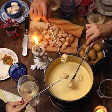
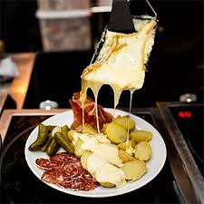
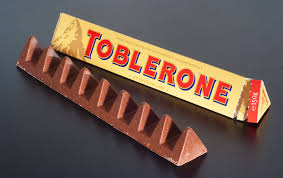

Geschmolzener Käse in einem Topf, der mit Brot getunkt und mit Wein genossen werden kann.
Auf offenem Feuer geschmolzener Käse, der dann auf einen Teller gegossen und entweder mit Brot oder Kartoffeln gegessen wird, ähnlich wie beim Fondue, aber die Käsekonsistenz ist nicht so dünn.
Die Toblerone ist zwar nicht direkt ein Lebensmittel, aber in der Schweiz ist sie eine Tradition. Die Schokoladentafel mit den Berggipfeln kann in einzelne Stücke gebrochen werden, um sie zu genießen.
